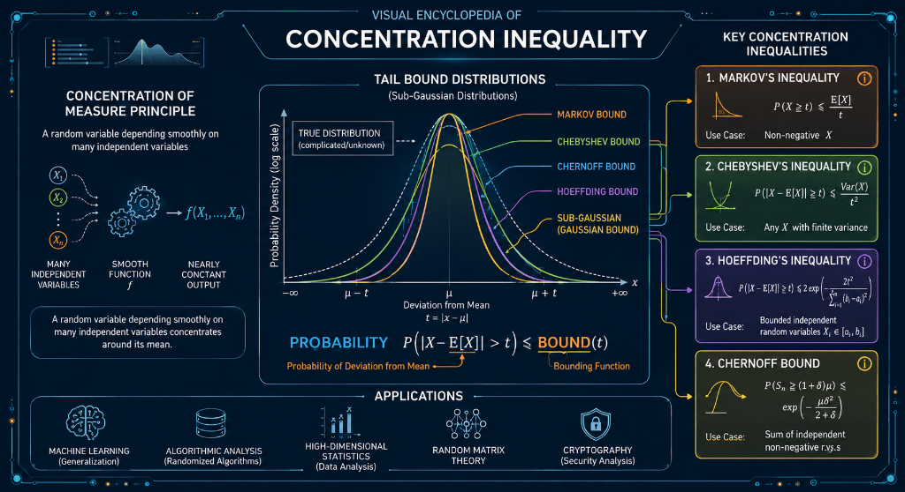

在演算法分析（Algorithm Analysis）的領域中，我們不只需要設計演算法，更需要在設計完成後，回答一些關鍵問題：「我們設計的隨機演算法，能在預期時間內給出正確答案的機率有多高？」、「在最壞情況下，系統資源的消耗是否會超出我們設定的容忍上限？」。這些問題本質上都有個共同的核心目標，那就是如何嚴謹地向他人證明我們的演算法是「好」的、是「可靠」的？
畢竟空口無憑，我們不能僅靠有限的實驗結果來下定論。因為有限的測試數據可能存在倖存者偏差，我們不能僅憑幾次成功的執行紀錄，就斷言該演算法在面對所有可能的龐大輸入時都能表現優異——局部結果與整體的真實表現往往存在不小的差異。
那如果我們嘗試透過數學模型，來推算該演算法面對全體可能輸入的結果呢？
要算出該演算法對全體可能輸入的結果，最直觀的方式就是對所有可能的執行路徑進行精確的數學積分或離散加總，然後算出符合條件的事件所佔的比例；不過這也意味著我們必須掌握系統完整的機率分佈。
然而，現代隨機演算法（Randomized Algorithms）與分散式系統的狀態空間往往極度複雜，屬於超高維度的巨大組合空間。即使我們確切知道了每一步隨機操作的局部機率分佈，要在這樣龐大的空間中進行精確的積分與加總，在計算上也是完全不可行的。
既然無法進行精確的積分與加總，我們自然就無法算出某個特定極端事件發生的「絕對機率」（例如「演算法執行時間超過預期 10 倍」的精確數值）。在無法得知精確分佈與絕對機率的情況下，我們該如何給出嚴謹的信心保證？這時，我們需要一種數學工具，來繞過複雜的積分與加總運算，幫助我們真正量化對演算法結果的信心程度。這就引出了我們今天的主題——集中不等式。而這個信心程度在理論分析中，就是所謂的信心水準（Confidence Level），用來精確宣告「演算法結果落在安全區間內的理論機率」。
在正式進入集中不等式之前，我們先來簡單介紹什麼是「集中現象（Concentration of Measure）」。集中現象主要描述一個機率統計上的宏觀確定性：當一個隨機變數 $X$ 是由許多隨機因子共同作用組合而成時，只要滿足以下兩個條件，其總體行為就會展現出極強的穩定性。
當滿足這兩個條件時，該隨機變數的數值會以極高的機率「緊密集中」在其期望值 $\mathbb{E}[X]$ 附近。
在我們日常生活中也可以找到許多對應且直觀的例子：
而我們今天的主題集中不等式（Concentration Inequalities），其主要任務就是捕捉並量化這種現象。它們能給出隨機變數偏離其期望值的機率上界，也就是說，當我們關注那些極端偏離平均值的不尋常壞事件時，這些工具能為我們提供所謂的尾端機率界限（Tail Bounds），明確且保守地告訴我們：發生極端狀況的機率「天花板」到底在哪裡。
在正式踏入集中不等式的領域之前，我們先退一步思考。數學家總是渴望精確，如果能得到完美的「等式」，為何我們要妥協於「不等式」？因此，我們有必要先探討集中等式的實務困境，才能真正理解為何需要集中不等式。
在機率論中，集中等式實際上描述的是機率密度函數在某一特定區域內的積分精確值。例如，如果我們想知道某個隨機變數 $X$ 與平均值 $\mu$ 的誤差大於或小於某個門檻 $\epsilon$ 的機率，我們理想中會得到如下等式：
$$P(|X - \mu| > \epsilon) = \delta$$ $$P(|X - \mu| \le \epsilon) = 1 - \delta$$
這兩行式子可以這樣解讀：
然而，正如前面所提及的，在現實中針對複雜分佈的積分與加總運算往往極度困難甚至不可行。因此，我們幾乎無法獲得這樣一個精確的界定機率 $\delta$。
既然精確計算 $\delta$ 是一件不切實際的事，我們轉而尋求計算一個相對容易得到的上限值 $\delta'$，使得精確機率 $\delta \le \delta'$。
為什麼求上限值會比較簡單？
因為在數學推導上，我們可以利用隨機變數的某些已知統計特徵，像是期望值與變異數等統稱為「動差」（Moments）的量，透過代數放縮技巧來繞過複雜的分佈積分。這使得我們不必知道完整的機率分佈長什麼樣子，就能給出一個保守但絕對安全的數學保證。
這時，上述的等式就變成了集中不等式：
$$P(|X - \mu| > \epsilon) \le \delta'$$ $$P(|X - \mu| \le \epsilon) \ge 1 - \delta'$$
現在，這兩行式子的意義轉變為：
顯然，機率界限 $\delta'$ 是門檻 $\epsilon$ 的函數，可以寫作 $\delta'(\epsilon)$。當我們對容忍誤差 $\epsilon$ 的要求越小、越嚴苛時，壞事發生的機率上限 $\delta'$ 也就無可避免地跟著變大。
我們可以用最常見的標準常態分佈（高斯分佈），來具體感受代數放縮的威力。對於標準常態分佈，尾端機率為：
$$P(X \ge t) = \frac{1}{\sqrt{2\pi}} \int_{t}^{\infty} e^{-\frac{x^2}{2}} dx$$
直接對這個函數進行積分並不具備簡單的封閉解，但我們可以應用一個巧妙的放縮技巧：因為在積分區間 $[t, \infty)$ 中，$x \ge t$，所以必然有 $\frac{x}{t} \ge 1$。我們將這個大於等於 1 的項乘入積分中，將原本的函數放大：
$$P(X \ge t) \le \frac{1}{\sqrt{2\pi}} \int_{t}^{\infty} \frac{x}{t} e^{-\frac{x^2}{2}} dx$$
這個被放大的積分就可以輕鬆解出了。我們令 $u = \frac{x^2}{2}$，其微分 $du = x dx$，代入後最終我們得到一個乾淨漂亮的不等式上界：
$$P(X \ge t) \le \frac{1}{t\sqrt{2\pi}} e^{-\frac{t^2}{2}}$$
透過這個簡單的放縮技巧，我們成功避開了複雜的高斯積分，並獲得了一個形式優美且非常實用的指數級衰減上界。這正是集中不等式核心思想的最佳體現：用微小的精度妥協，換取計算上的極大便利與強而有力的數學保證。
在大致瞭解了集中不等式的概念之後，下一個疑問就是：那我們該如何運用呢？實際上，集中不等式有許多不同的形式，它們各自適用於不同的隨機性場景。根據我們對隨機變數 $X$ 掌握的已知資訊多寡，特別是所謂的「動差」，我們擁有不同階梯的數學工具。而這裡最重要的一個核心法則是：已知條件越嚴苛、掌握的統計資訊越多，我們能得到的界限就越緊緻。
以下是我們在分析時最常用的階梯式工具箱光譜：
這是不等式家族中最基礎、也最通用的工具。它唯一的前提條件是隨機變數必須為非負數（即 $X \ge 0$）。在我們只知道一階動差，亦即期望值 $\mathbb{E}[X]$ 的匱乏情況下，它就能給出一個尾端衰減速率為多項式級 $\mathcal{O}(1/t)$ 的保證。由於所需條件極低，當我們對系統幾乎一無所知時，它通常作為最底層的保底界限。
當我們對系統有進一步的了解，除了期望值，還掌握了二階動差，也就是變異數 $\operatorname{Var}(X)$ 為有限值的狀態時，就可以升級使用柴比雪夫不等式。它將衰減速率顯著提升到了 $\mathcal{O}(1/t^2)$，使得界限大幅收緊。在實務上，它特別適用於我們能證明變數之間存在弱條件的場景，像是成對獨立（Pairwise independence）。
這是工具箱中最銳利的武器。當隨機變數是由多個互相獨立且有界的子變數加總而成（形式為 $X = \sum X_i$）時，我們可以利用動差生成函數（Moment Generating Function，簡稱 MGF），來捕捉無限階動差的資訊。藉由如此強大的前提，它能給出指數級別的衰減速率 $e^{-\Omega(t^2)}$。在分析獨立試驗總和，像是在計算隨機演算法的成功率時，它能提供極強且令人安心的機率保證。
常被稱為 Boole's Inequality。與上述探討單一隨機變數偏移的工具不同，它是用來處理事件集合的。它不需要任何獨立性前提，完全無條件適用。只要知道個別壞事件發生的機率，就可以透過簡單的線性疊加 $\sum \operatorname{Pr}[A_i]$ 來計算出至少發生一件壞事的總失敗率上界。在結合多個可能導致系統崩潰的潛在問題時，它是不可或缺的最強實用工具。
至此，我們已大致勾勒出機率論中集中不等式的核心輪廓。集中不等式本質上是一個在資訊不對稱與隨機性中尋求確定性保證的強大工具。因此，在演算法設計與系統分析的領域中，只要場景是由大量局部隨機事件疊加、且我們試圖掌握整體的宏觀穩定行為，我們都能有效運用這套工具箱，獲得在分析與優化系統時所迫切需要的數學保證。
回到文章開頭的疑問：我們該怎麼回答「我們設計的隨機演算法，能在預期時間內給出正確答案的機率有多高？」這類問題？
如果我們將上述公式中的 $\epsilon$（或 $t$）視為演算法執行時間的「延遲容忍度」或是近似演算法的「誤差門檻」，我們實際上就能利用這些工具推導出一個嚴謹的數學上界，並自信地宣告：「我們的演算法有著至少 $1 - \delta'$ 的極高機率，其執行結果（或消耗時間）會被完美控制在 $\epsilon$ 的誤差範圍內！」這完美解答了演算法分析中許多關鍵問題的核心——即嚴格量化隨機演算法的可靠程度。
You are given a set of notes or an article.
Read and understand the content, then generate approximately 20 questions.
Requested question type(s): ["mcq"]
Most questions should be drawn directly from the material, focusing on key concepts, definitions,
and core ideas, while a smaller portion can be creative or application-based,
extending the material into real-world or novel scenarios but staying conceptually grounded.
Include a mix of difficulty levels—beginner, intermediate, advanced, and professional.
For each question, provide the question number, type (conceptual, application, analytical),
difficulty, topic, the correct answer, and a brief explanation.
If the requested question format requires options (for example MCQ), include the necessary answer choices.
Focus on clarity, relevance, and meaningful application, avoiding trivial or overly obscure details.You are given a set of notes or an article.
Read and understand the content, then generate approximately 20 questions.
Requested question type(s): ["mcq"]
Most questions should be drawn directly from the material, focusing on key concepts, definitions,
and core ideas, while a smaller portion can be creative or application-based,
extending the material into real-world or novel scenarios but staying conceptually grounded.
Include a mix of difficulty levels—beginner, intermediate, advanced, and professional.
For each question, provide the question number, type (conceptual, application, analytical),
difficulty, topic, the correct answer, and a brief explanation.
If the requested question format requires options (for example MCQ), include the necessary answer choices.
Focus on clarity, relevance, and meaningful application, avoiding trivial or overly obscure details.